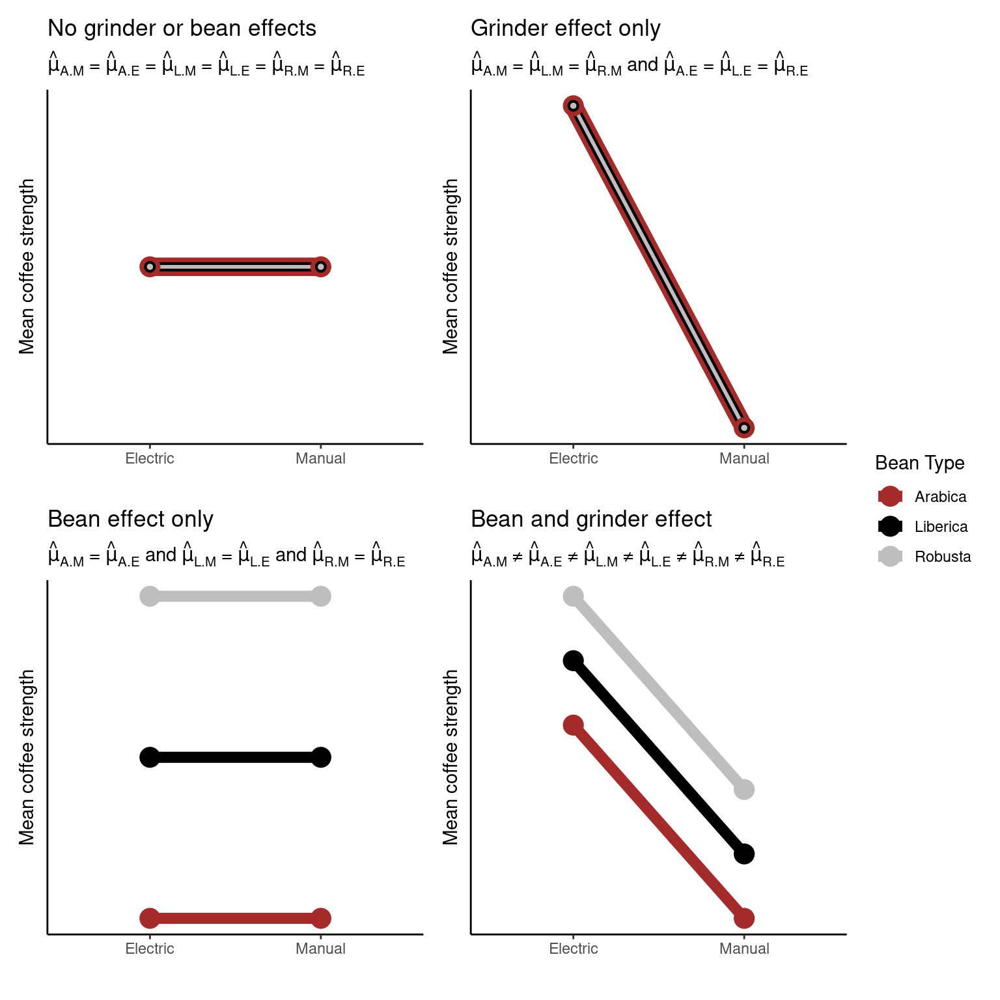
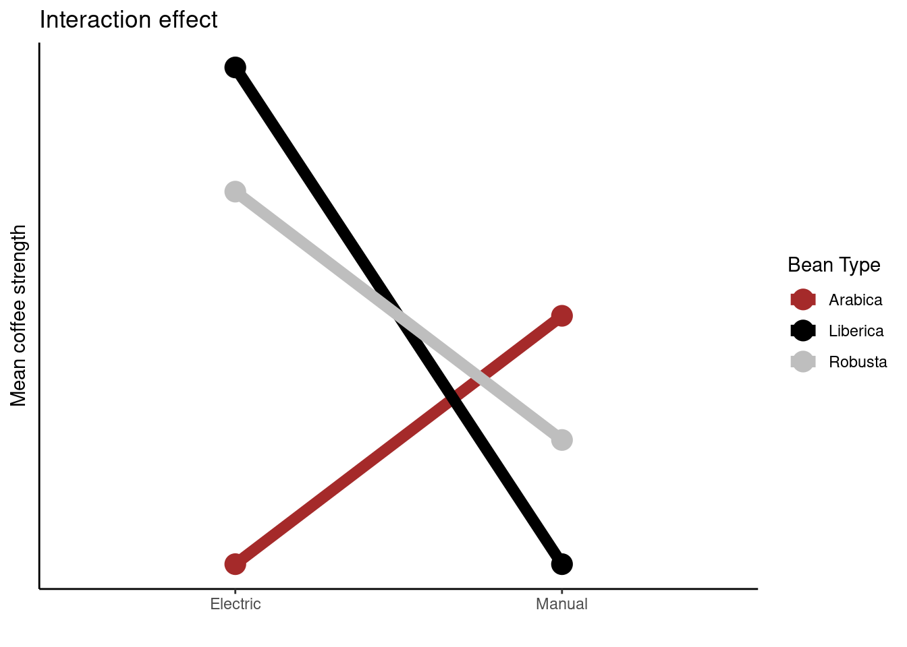

Chapter 4 Introduction to the design and analysis of experiments
We now know how to deal with data in R; however, before we start drawing conclusions we need to know how the data were collected. Generally, data is either observational (data collected where researchers don’t control the environment, but simply observe outcomes) or experimental (data collected where researchers introduce some intervention and control the environment in order to draw inference).
Being able to design and critique appropriate experiments is a key skill for any budding biologist. But how do you start?
R. A. Fisher’s work in the area of experimental design is, perhaps, the most well known in the field. The principles he devised we still abide by today. Note, however, to give a balanced view of the celebrated mathematician many of his views (on eugenics and race in particular) are abhorrent to many. I would urge you to read up on his work in this area and come to your own conclusions.

Learning objectives
- Identify the following in a given experiment
- experimental unit
- observational units
- treatment(s)
- List and describe the three main principals of experimental design, specifically,
- randomization
- replication
- blocking
- Describe the layout and set-up of a CRD, RCBD, and a simple factorial experimental design
- Discuss and critique a given experimental design
- Identify sources of variation within a given experimental design
4.1 Introduction to experiments
“A useful property of a test of significance is that it exerts a sobering influence on the type of experimenter who jumps to conclusions on scanty data, and who might otherwise try to make everyone excited about some sensational treatment effect that can well be ascribed to the ordinary variation in [their] experiment.”
4.1.1 Key phrases
An experiment is a procedure (or set of actions) where a researcher intentionally changes some factor/treatment/variable to observe the effect of their actions. As mentioned above, the collection of observational data is not experimentation.
An experimental unit is the smallest portion of experimental material which is independently perturbed. This is the item under study for which some variable (treatment) is changed. For example this could be a human subject or an agricultural plot.
An observational unit (or subsample) is the smallest unit on which a response is measured. If the experimental unit is split after the treatment has been applied (e.g., multiple samples taken from one human subject) then this sample is called a subsample or observational unit. If one measurement is made on each experimental unit then the observational unit = the experimental unit. If multiple measurements are made on each subject (e.g., human) then each experimental unit has >1 observational unit. This is then pseudo- or technical replication (see below).
A treatment (or independent variable or factor or treatment factor) is an experimental condition independently applied to an experimental unit. It is one of the variables that is controlled by the researcher during the experiment (e.g., drug type). The values of the treatments within a set are called levels.
The dependent variable or response is the output (or thing) that is measured after an experiment. This is what the researcher measures and assesses if changing the treatment(s) (i.e., independent variable(s)) induces any change. An effect is the change in the response variable caused by the controlled changes in the independent variable. Whether the magnitude of the effect (it’s size) is significant (or or any practical interest) is determined by the researcher after carrying out some appropriate analyses.
4.1.2 Setting up an experiment
When setting up and experiment and/or considering experimental data there are questions we should always answer the following questions.
- What are the objectives of the study? Why are you carrying out this experiment?
- What is the scientific question? What specific hypothesis do you hope to test/investigate?
- What are the experimental units? What characteristics of the experimental units can be measured? How large is an meaningful effect size in this context?
- How many treatments are to be studied and what are they? How does the experimenter apply the treatments to the available experimental units and then observe the responses?
- What are the potential sources of variation? Can you control for the unwanted sources or variation? Can you name all likely sources?
- Can the resulting design be analyzed or can the desired comparisons be made? **Can you describe and detail the appropriate analysis?*
4.1.2.1 A simple example: Charlotte’s coffee
Charlotte wants to investigate the strength of different coffee beans. So, she sets up an experiment as follows.
- Three types of coffee beans are chosen: Arabica, Liberica , and Robusta.
- 12 identical cups are chosen and sets of four cups are randomly allocated one of three treatments.
- Four sets of each type of coffee beans are ground and cups made (in the same way) resulting in a total of 12 cups of coffee, see below.
- Samples are taken from each cup and the coffee strength is measured.
4.1.2.1.1 Scientific question: Does coffee strength differ between bean types of coffee beans?
There are 3 treatments (types of coffee beans): Arabica, Liberica, and Robusta.
In this case the experimental unit would be the coffee cup as each one is allocated a different bean type (treatment).
The observational unit changes depending on the scenario (i.e., what and how samples are taken). For example,
- if a single ml of liquid is taken from each cup and one measurement is taken per ml taken \(\rightarrow\) the observational unit would be the cup;
- if single ml of liquid is taken from each cup and two subsamples are then taken from each ml, then if measurements are taken per subsample \(\rightarrow\) then the observational unit would be a subsample;
- if four \(\times\) 1 ml of liquid were taken from each cup and from each ml a measurement is taken \(\rightarrow\) then the observational unity would be each 1ml sample.
4.2 The three (main) principles of experimental design
4.2.1 Replication
Biological replication: each treatment is independently applied to each of several humans, animals or plants. Why? To generalize results to population.
Technical replication: two or more samples from the same biological source which are independently processed. Why? Advantageous if processing steps introduce a lot of variation; increases the precision with which comparisons of relative abundances between treatments are made.
Pseudo-replication: one sample from the same biological source, divided into two or more aliquots which are independently measured. Why? Advantageous for noisy measuring instruments; increases the precision with which comparisons of relative abundances between treatments are made.
4.2.2 Randomization
The main reason to randomise allocation of treatment to experimental units is to protect against bias. We, typically, wish to plan the experiment in such a way that the variations caused by extraneous factors can all be combined under the general heading of “chance”. Doing so ensures that each treatment has the same probability of getting good (or bad) units and thus avoids systematic bias. Random allocation can cancel out population bias; it ensures that any other possible causes for the experimental results are split equally between groups. Typically statistical analysis assumes that observations are independent. This is almost never strictly true in practice but randomisation means that our estimates will behave as if they were based on independent observations.
4.2.3 Blocking
Blocking helps control variability by making treatment groups more alike. Experimental units are divided into subsets (called blocks) so that units within the same block are more similar than units from different subsets or blocks. Blocking is a technique for dealing with nuisance factors. A nuisance factor is a factor that has some effect on the response, but is of no interest.
4.3 Some experimental designs
4.3.1 Completely randomised design (CRD)
Let’s consider a completely randomised design with one treatment factor (e.g., coffee bean type). Here, \(n\) experimental units (e.g., cups) are divided randomly into \(t\) groups. Random allocation can be achieved by simply drawing lots from a hat! To be more rigorous, though, we could use R’s sample() function (have a go yourself and see if you can work out how to wield sample()). Each group is then given one treatment level (one of the treatment factors). As we have defined only one treatment factor all other known independent variables are kept constant so as to not bias any effects (e.g., cup type and type in Charlotte’s coffee experiment).

An illustration of a CRD with one tratment factor and three treatment levels (A, B, & C)
4.3.1.1 Designing a CRD using R
Let’s assume you want to set up an experiment similar to the coffee one above using R to do the random allocation of treatments for you.
## create a character vector of bean types
beans <- rep(c("Arabica","Liberica", "Robusta"), each = 4)
beans## [1] "Arabica" "Arabica" "Arabica" "Arabica" "Liberica" "Liberica"
## [7] "Liberica" "Liberica" "Robusta" "Robusta" "Robusta" "Robusta"## randomly sample the character vector to give the order of coffees
set.seed(1234) ## this is ONLY for consistency, remove if doing this yourself
allocation <- sample(beans, 12)
allocation## [1] "Robusta" "Robusta" "Liberica" "Liberica" "Arabica" "Liberica"
## [7] "Arabica" "Robusta" "Arabica" "Liberica" "Robusta" "Arabica"Having run the code above your CRD plan is as follows
| Cup | Bean |
|---|---|
| 1 | Robusta |
| 2 | Robusta |
| 3 | Liberica |
| 4 | Liberica |
| 5 | Arabica |
| 6 | Liberica |
| 7 | Arabica |
| 8 | Robusta |
| 9 | Arabica |
| 10 | Liberica |
| 11 | Robusta |
| 12 | Arabica |
4.3.2 Randomised complete block design (RCBD)
Let’s consider a randomised complete block design with one treatment factor (e.g., coffee bean type). If the treatment factor has \(t\) levels there will be \(b\) blocks that each contain \(t\) experimental units resulting in a total of \(t\times b\) experimental units. For example, let’s imagine that for the coffee experiment we had two cup types: mugs and heatproof glasses. We might consider the type of receptacle to have an effect on the coffee strength measured, however, we are not interested in this. Therefore, to negate this we block by cup type. This means that any effect due to the blocking factor (cup type) is accounted for by the blocking.
For a blocked design we want the \(t\) experimental units within each block should be as homogeneous as possible (as similar as possible, so that there is unlikely to be unwanted variation coming into the experiment this way). The variation between blocks (the groups of experimental units) should be large enough (i.e., blocking factors different enough) so that conclusions can be drawn. Allocation of treatments to experimental units is done randomly (i.e., treatments are randomly assigned to units) within each block.

An illustration of a CRD with one tratment factor, three treatment levels (A, B, & C), and three blocks (rows)
4.3.2.1 Designing a RCBD using R
Let’s assume you want to set up an experiment similar to the coffee one above; however, now you are in the situation where you have two types of cups (six mugs and six heatproof glasses). Below we use R to do the random allocation of treatments within each block (cup type) for you.
Here we have \(t = 3\) treatments (bean types) and \(b = 2\) blocks (cup types) so we will have \(t \times b = 6\) experimental units in total.
set.seed(432) ## this is ONLY for consistency, remove if doing this yourself
plan <- data.frame(Beans = rep(c("Arabica","Liberica", "Robusta"), times = 2),
Block = rep(c("Mug", "Glass"), each = 3)) %>% ## combine experiment variables
group_by(Block) %>% ## group by blocking factor
dplyr::sample_n(3)
plan## # A tibble: 6 × 2
## # Groups: Block [2]
## Beans Block
## <chr> <chr>
## 1 Robusta Glass
## 2 Arabica Glass
## 3 Liberica Glass
## 4 Robusta Mug
## 5 Arabica Mug
## 6 Liberica MugHaving run the code above your RCBD plan is as follows
| Cup | Beans | Block |
|---|---|---|
| 1 | Robusta | Glass |
| 2 | Arabica | Glass |
| 3 | Liberica | Glass |
| 1 | Robusta | Mug |
| 2 | Arabica | Mug |
| 3 | Liberica | Mug |
4.3.3 Factorial design
A factorial experiment is one where there are two or more sets of (factor) treatments. Rather than studying each factor separately all combinations of the treatment factors are considered. Factorial designs enable us to infer any interaction effects, which may be present. An interaction effect is one where the effect of one variable depends on the value of another variable (i.e., the effect of one treatment factor on the response variable will change depending on the value of a second treatment factor.)
For example, we could add another treatment to the coffee experiment above: grinder type (manual or electric). So, now we have two treatments, bean type (with three levels) and cup type (with two levels). Recall that in a factorial experiment we want to study all combinations of the levels of each factor:
| Manual | Electric | |
|---|---|---|
| Arabica | A.M | A.E |
| Liberica | L.M | L. E |
| Robusta | R.M | R. E |
Note is a factorial design has equal numbers of replicates in each group then it is said to be a balanced design; if this is not the case then it is unbalanced.
Now, our question about the strength of coffee would be Does the strength of the difference in the strength of the coffee between the beans wall depend on the grinder used?
Possible outcomes

4.3.3.1 Interactions
If an interaction effect exists the effect of one factor on the response will change depending on the level of the other factor:

The plot above is called an interaction plot. Creating such a plot is often very useful when drawing inference; in this instance we can see that the strength of the coffee changes depending on the type of coffee bean used, however, this relationship differs depending on the type of grinder used. For example, Liberica beans produce stronger coffee than the other two beans when the electric grinder is used, but weaker coffee when the manual grinder is used.
Other resources: optional but recommended
- Glass, David J. Experimental Design for Biologists. Second ed. 2014. Print.
- Welham, S. J. Statistical Methods in Biology : Design and Analysis of Experiments and Regression. 2015. Print.
- Fisher, Ronald Aylmer. The Design of Experiments. 8th ed. Edinburgh: Oliver & Boyd, 1966. Print. O & B Paperbacks.
- Lawson, John. Design and Analysis of Experiments with R. Vol. 115. CRC press, 2014.